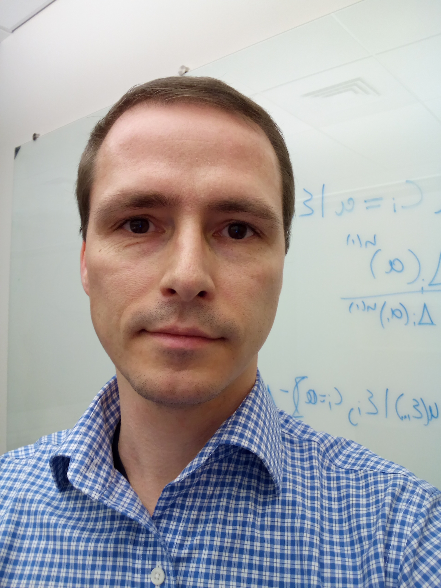

Steffen Ventz
|  |
Affiliation
Division of Biostatistics, Contact Information
A460 Mayo Building, MMC 303 Full Curriculum VitaeCV (last updated 08/2022) |
Education
PostDoc Department of Biostatistics, Harvard University, Boston 2013-2015
Ph.D. in Mathematical Statistics, Bocconi University, Italy, 2013
M.Phil in Mathematical Statistics, Bocconi University, Italy, 2010
M.A. in Mathematical Demography, University of Rostock, Germany, 2007
B.S. in Mathematical Demography, University of Rostock, Germany, 2005
About me
I am an Assistant Professor of Biostatistisc in the Division of Biostatistics
at the University of Minnesota.
Before joining UMN, I was a Faculty Member of the Department of Data Science at the Dana Farber Cancer Institute
and the Department of Biostatistics at the Harvard T.H. School of Public Health.
Prior to HSPH and DFCI, I spent a couple of years as an Assistant Professor at the University of Rhode Island,
where I was also affiliated with the Department of Computer Science and Statistics.
I obtained my PhD in Statistics from Bocconi University in Milan, Italy, under the supervision of Pietro Muliere and
completed PostDoctoral trainning at the Harvard T.H. School of Public Health.
My research interests are mainly in response-adaptive clinical trials, statistical computation,
Bayesian decision theory, Bayesian analyses and lately reinfored learning and causal inference.
I’ve done work on information theory, Bayesian dose finding methods, platform and basket trials,
statistical inference under adaptive sampling designs, causal inference and computational biology.
My recent research interests focuse on multiple testing, deep learning and data fusion.
Recent collaborative projects have involved applications in cancer and infectious disease.
See my Papers page for more details.
Research Interests
Bayesian statistics and statistical decision theory
Statistical computing, Monte-Carlo optimization
Adaptive methods for sequential statistics experiments
Data integration and predictions
Penelized regression and schrinkage estimation
Causal inference
Academic Experience
Assistant Professor,
Division of Biostatistics,
University of Minnesota, 2022-
Research Scientist,
Department of Biostatistics,
Harvard University, 2018-2022
Research Scientist,
Program in Regulatory Science,
Dana-Farber Cancer Institute, 2018-2022
Assistant Professor,
Department of Computer Science and Statistics, University of Rhode Island, 2015 - 2018
Visiting Scientist,
Department of Biostatistics and Computational Biology,
Dana-Farber Cancer Institute, 2015 - 2018
Research Fellow,
Department of Biostatistics,
Harvard University, 2013-2015
Research Fellow,
Department of Biostatistics and Computational Biology,
Dana-Farber Cancer Institute 2013-2015
News
- 2020/02: Steffen taught two short cources on Bayesian adaptive designs at the University of Sydney and monash University in Melbourne
- 2020/02: Steffen joined the FDA-Project Data Sphere Talks Force on the development of novel hybrid trial designs for GBM
- 2020/01: We just submitted our paper on hybrid trial designs for SCLC studies
- 2019/12: Our JASA paper on BUD designs is out now
- 2019/10: Our paper on Bayesian desins for Deintensification studies is now online at CCR
- 2019/01: Our paper on the design and evaluation of synthetically controlled trial designs is now online at CCR
- 2018/05: Steffen joined the FDA-Project Data Sphere Talks Force on ECTs for SCLC
- 2018/07: Steffen organized a ISBA session on Bayesian adaptive designs for clinical studies Edinburgh, Scotland
- 2017/05: Steffen gave a talk at on Bayesian uncertainty directed sampling at MBSW in Muncie, Indiana
- 2017/05: Our paper on response adaptive designs for Platform studies has been accepted by Biostatistics
- 2017/04: Our paper on Platform methods has been accepted by JCO
- 2017/01: Our paper on Bayesian Basket designs has been accepted by Biometrics
- 2016/06: Our paper on Adaptive designs for surrogate outcome models has been accepted by Clinical Trials
- 2015/03: Our Biometrics paper on the control of Frequentist operating characteristics for Bayesian designs is out